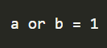

C OPERATORS
Special symbols that are used to perform actions or operations are known as operators. They could be both unary or binary. For example, the symbol asterisk (*) is used to perform multiplication in C so it is an operator and it is a binary operator. This section covers all types of operators.
Arithmetic Operators
Arithmetic operators are used to perform mathematical operations such as addition, subtraction, etc. A few of the simple arithmetic operators are
We all must already know their purpose and how they are used in simple mathematics. Their purpose and functionality are the same. Let’s see their implementation in C.
Output:
Relational Operators
Relational operators are used for the comparison between two or more numbers or even expressions in cases. Same as Java, C also has six relational operators and their return value is of a Boolean type that is, either True or False (1 or 0).
Let’s see their implementation in C.
Output:
The output is 0, since a and b are not equal.
Logical Operators
- AND: it returns true when both operators are true or 1.
- OR: it returns true when either operator is true or 1.
- NOT: it is used to reverse the logical state of the operand.
There are three logical operators i.e. AND, OR, and NOT. They can be used to compare Boolean values but are mostly used to compare conditions to see whether they are satisfying or not.
Let’s see their implementation in C.
Output:

Bitwise Operators
A bitwise operator is used to performing operations at the bit level. To obtain the results, they convert our input values into binary format and then process them using whatever operator they are being used with.
Let’s see their implementation in C.
Output:
The output is 1, since a xor b is 01 in binary, which is 1 in decimal.
Assignment Operators
Assignment operators are used to assign values. We will use them in almost every program we develop.
Equal to (=) is the assignment operator here. It is assigning 0 to a and 1 to b in the above example.